Next case
LPL Financial
TEAM
1 AVP of UX (Me)
1 Senior UX Designer
1 Senior Product Manager
1 Director of Product
16 Developers
THEMES
Advisor Onboarding
Service Design
Compliance UX
Design Systems
Fintech
OUTCOMES
▲ 20 activities, 1 plan
▲ 4 plain language phases
▼ Time to ready
▲ Day one readiness
Overview
Abstract
As AVP of UX at LPL Financial, I led the design of ClientWorks Onboarding, the guided home for the riskiest moment in a financial advisor's career: moving an entire practice to a new firm. A transition means re-papering every client account, re-establishing licensing, and satisfying FINRA and firm compliance, all within a seven week window where every lost day risks losing clients. With one senior designer and sixteen engineers, we compressed that chaos into a single transparent plan. Twenty activities, four plain language phases, and a named human team one click away on every screen.
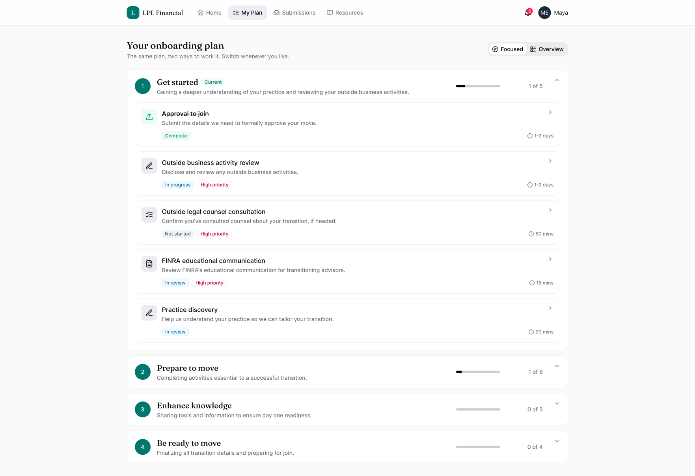
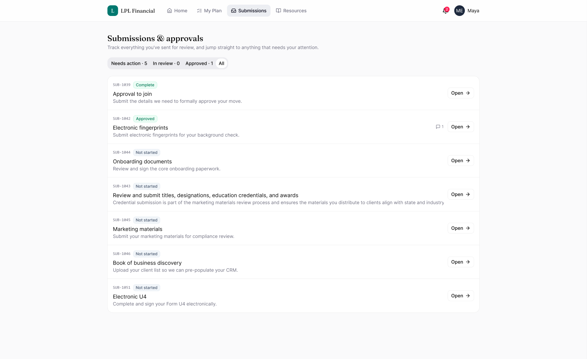
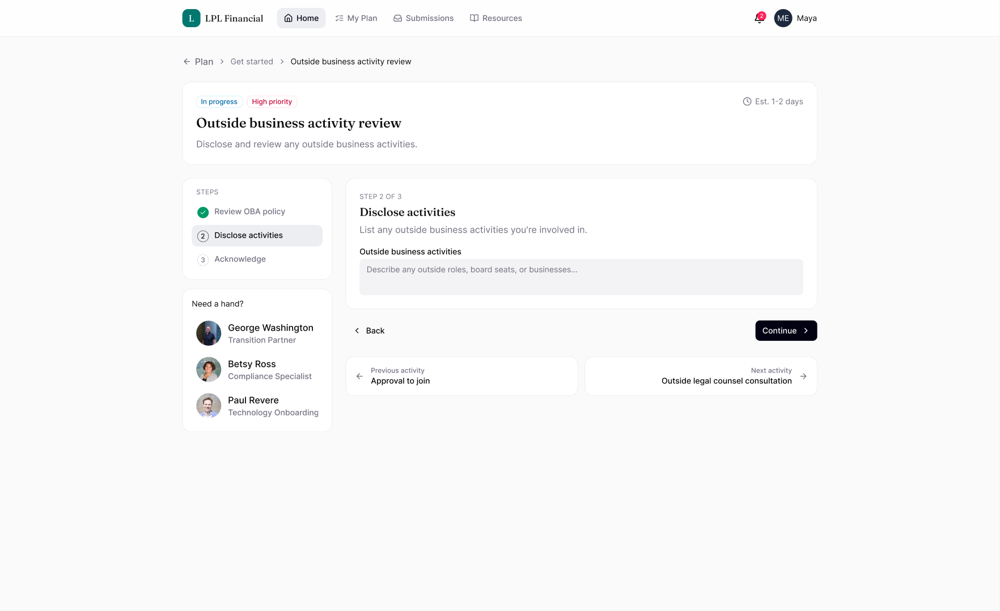
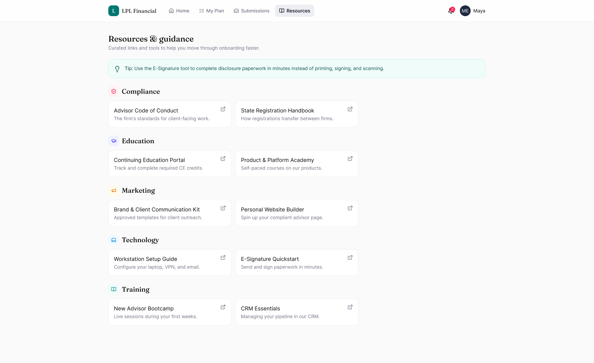
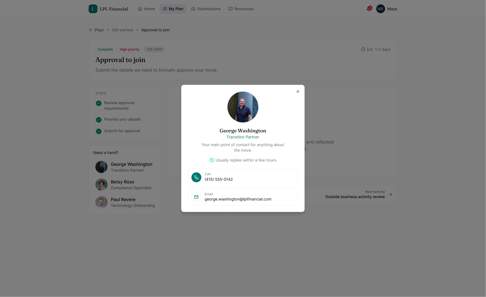
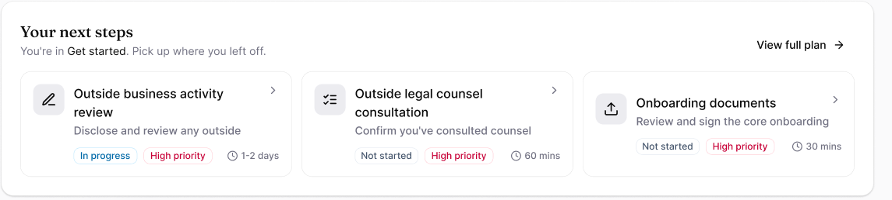
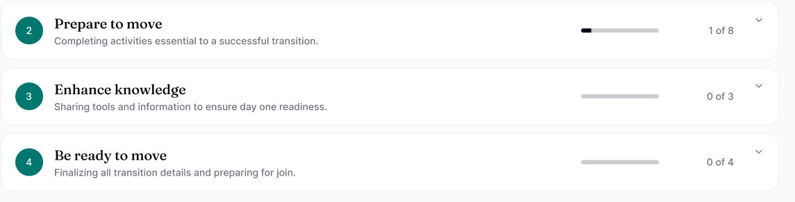
The Challenge
A transition in the dark
The hardest part of an advisor's move isn't the work, it's the opacity. The process lived across scattered PDFs, email threads, and phone calls, with no single source of truth and no visible sense of progress. Advisors were making the biggest bet of their careers essentially blind. For LPL, that opacity was also a competitive problem. The clearer the transition, the more advisors choose the firm, and the faster they become productive once they land.
Our answer starts on the first screen: your name, your target start date, a live countdown, and exactly how much is done. Advisors see whether they are on track before they ever have to ask.
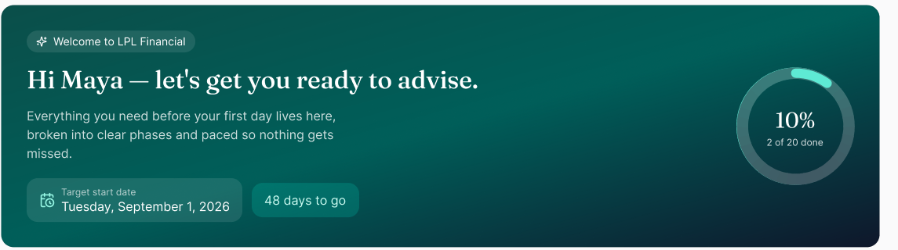
Research
Mapping the move
Before drawing a single screen, we mapped the entire transition as a service. I sat with transition partners as they walked advisors through the process by phone, interviewed advisors during and after their moves, and worked through the review queues with the compliance teams on the other side of every submission. The service blueprint that came out of it became the project's shared map. It was the first time the advisor journey and the internal review machinery existed in one picture.
Findings
- Advisors asked the same four questions on nearly every call: What do I do next? How long will it take? Am I on track? Who do I call when I'm stuck?
- Anxiety spiked wherever work disappeared into a queue. A submission with no visible status generated more support calls than the hardest form.
- Advisors triage like operators. Given a status, a priority, and a time estimate, they scheduled themselves without any hand holding.
- Some advisors wanted only the next action, while others refused to trust a system that hid the full picture. One plan needed to serve two mindsets.
- Trust followed faces, not features. Advisors consistently named their transition partner, not the software, as the reason they felt safe.
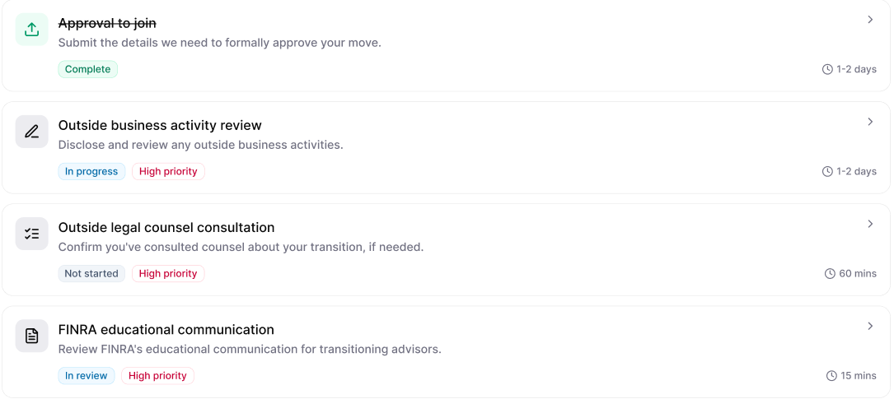
The Approach
The advisor's mental model, not the org chart
The findings became design principles. We reorganized every requirement from a dozen internal owners into four phases an advisor would actually say out loud: Get started, Prepare to move, Enhance knowledge, and Be ready to move. Every activity carries its status, its priority, and an honest time estimate, whether that is fifteen minutes or two days.
For the two mindsets, we refused to pick a winner. One toggle switches the same plan between two levels of zoom. Focused hands you the next action, and Overview lays the whole journey on the table.
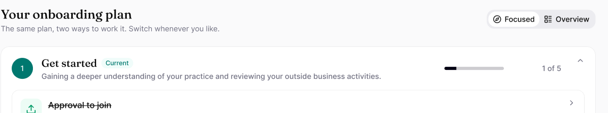
We also designed for the messy realities first, not last. Rejections, change requests, and review queues are the moments that actually generate panic, so they received the same care as the happy path. A first time advisor is never lost in an unfamiliar regulatory process.
My Role
As AVP of UX, I owned the experience end to end: the vision, the service blueprint, the phased information architecture, and the design quality bar. The design team was deliberately small, just myself and one senior designer against sixteen engineers, so I made leverage the strategy. We systematized everything through one design system, reusable flow patterns, and specs annotated to the level that engineering rarely had to guess. Two designers kept sixteen developers shipping without becoming the bottleneck.
Just as deliberate was what we kept human. Every screen keeps the advisor's named onboarding team one glance away, with photos, roles, and direct phone and email, because our research said trust follows faces. The product guides and the people reassure.
Solutions
The advisor lands on a home base with their name on it: target start date, a live countdown, an overall progress gauge, and their next best steps. Behind it, all twenty activities live in the four phases, each tagged with its status, priority, and expected duration. Approval to join is high priority and takes 1 to 2 days, while the FINRA communication takes 15 minutes. A sprawling process became finite, sequenced, and honest about effort.
Research said advisors split into two mindsets, so one toggle reframes the whole plan for both. Focused mode serves the advisor who just wants the next action, showing the current phase as a small set of cards with clear calls to action. Overview mode lays out every phase and activity as a scannable table for the advisor who plans ahead. It is the same plan at two levels of zoom, with less overwhelm and nothing hidden.
Regulatory work became step by step flows instead of checkboxes. Advisors review the guides and disclosures, submit materials through guided forms, and track every submission through approved, in review, and changes requested states. When reviewers request changes, the advisor is linked straight to the submission and responds in context with comments and a resubmission. The moments that used to generate panicked phone calls now resolve inside the product.
Results
What shipped, and what it changed:
- One home for the entire transition, with twenty activities across four phases, visible from the advisor's first login to their first day.
- Every activity carries a status, a priority, and an honest time estimate, so the entire transition can be triaged in one glance.
- Focused and Overview modes on one shared plan, with the four most common transition questions answered by the interface instead of a phone call.
- Guided submission flows with visible review states, comments in context, and notifications that link straight to the item that needs action.
- The advisor's named onboarding team on every screen of the journey, with photos, roles, and direct phone and email.
- A design system and reusable flow patterns that let two designers keep sixteen developers shipping at pace.
Parting Thoughts
Three orgs, one map
The invisible half of this project was organizational. The transition touched compliance, transitions operations, and technology. Three organizations with their own processes, systems, and definitions of done, none of which an advisor should ever have to learn. The service blueprint became the negotiating table. When every team could see their piece of the journey next to everyone else's, arguments about ownership turned into arguments about the advisor, and those are the arguments worth having. Getting three orgs to agree on one map was slower than designing any screen, and worth more than most of them.
Reflections
The lesson I keep from this one is that transparency is the feature in high stakes moments. Advisors didn't need the work to be easier, since most of it is regulatory and can't be. They needed to see it, sequence it, and know a real person had their back. Show people where they stand, be honest about effort, and keep a human face one click away. The anxiety takes care of itself.
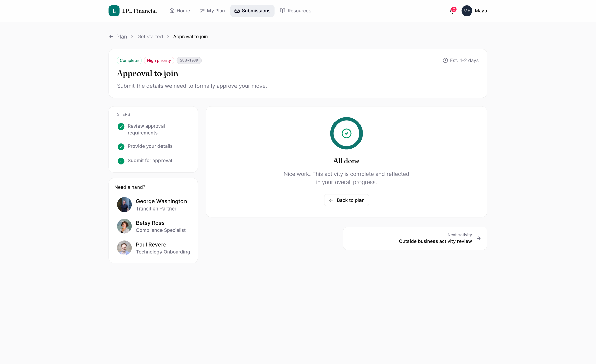